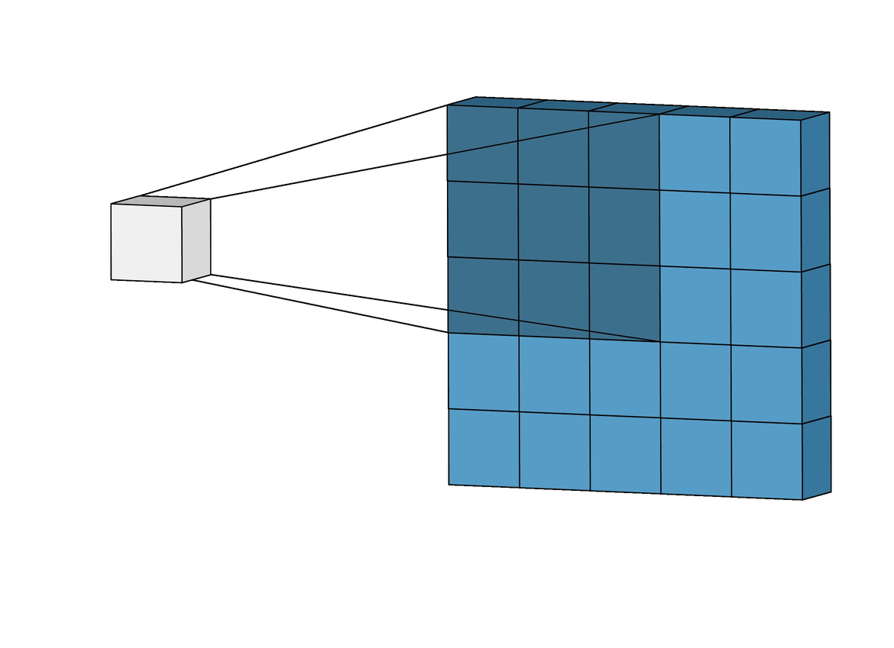
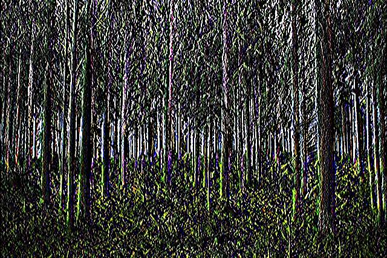

Here, we will learn about the basics of Convolutional Neural Networks (CNNs). CNNs are mainly split into 3 main parts: (1) Input, (2) Feature Learning, (3) Classification.
Input
The input to an image classification model is the image itself. Images are made up of an array of pixels, which each have a value ranging from 0 to 255. This array of pixels makes up the input to the image classification model.
Feature Learning
Feature learning in the CNN model makes use of the convolutional layers to extract out feature maps from the input images.
In the convolutional layers, filters will be used to run through every spatial position on the input image. The filters will be mathematically applied on every spatial position of the input via a dot product.
You can think of this as taking a magnifying glass, and zooming into the image bit by bit. At each position, you will identify a specific feature, such as vertical lines. This process will be repeated, and each time a different feature will be identified, ultimately building up various feature maps.

Animation of filter sliding over an image
The output of the dot product, depending on the particular type of filter, will allow the model to extract out features such as vertical lines or horizontal lines, to name a few.
Image of forest before vertical line filter

Image of forest after vertical line filter
Of course, these feature maps and filters are determined by the model's calculations, and not all of them will be understandable by us humans. Some filters and feature maps may be too abstract for us to visualise.
Classification
Following the output from the various convolutional layers, they will be passed into the fully connected layers where the model will classify the image based on what features were extracted from the image.
You will learn more about this in the next section.